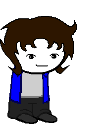

Sir of Space
Full name: Nate Poplin
Trolltag/Chumhandle: spaceSir
Quirk: *the quick brown fox jumps over the lazy dog
Associated Colour: #N/A
Session: Authors
Dancestor: N/A
Modus: The Pictionary+ Modus.
(It is the hardest iteration of the Pictionary Modus, granting images of Johnny Five and Dutton more frequently.)
Strife Specibus: Penkind
Server: Evan
Client: Ethan
Matesprit: N/A
Kismisis: N/A
Morail: N/A
Auspistice: N/A
Land:
Notes 1:
- Is an artist.
- Favourite food is spaghetti.
- Favourite animal is a skeleton.
Notes 2:
- Capped on Upward.
- Looks better in a monocle than Evan.
- Liked it after it was drawn by him.
- Isn't a tryhard, just doesn't try.
- Believes in the artistic beauty of PENS!
- Will draw after weeks of asking.
- Has “not gotten around to it.”
- Can draw.